Your manifestation journal
Tell Enara what you want. She works on it with you, every day.
Two short rituals, a guided audio course, and a companion who remembers what you wrote last week. A few minutes a day, on iPhone and Android.
The rituals, your journal and your sky stay free. Plus is included for seven days, no card needed.
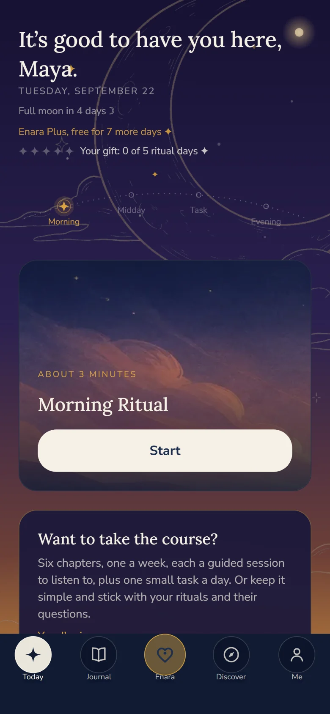
For iPhone and Android
Written in English, not translated
No ads, no tracking
Seven free days, no automatic subscription
Sample account Maya
Her words. Enara’s answer.
Maya is not a real user. Hers is a sample account we set up for this page. Her wish is in her own words, and everything Enara says back to her was generated exactly like this inside the app.
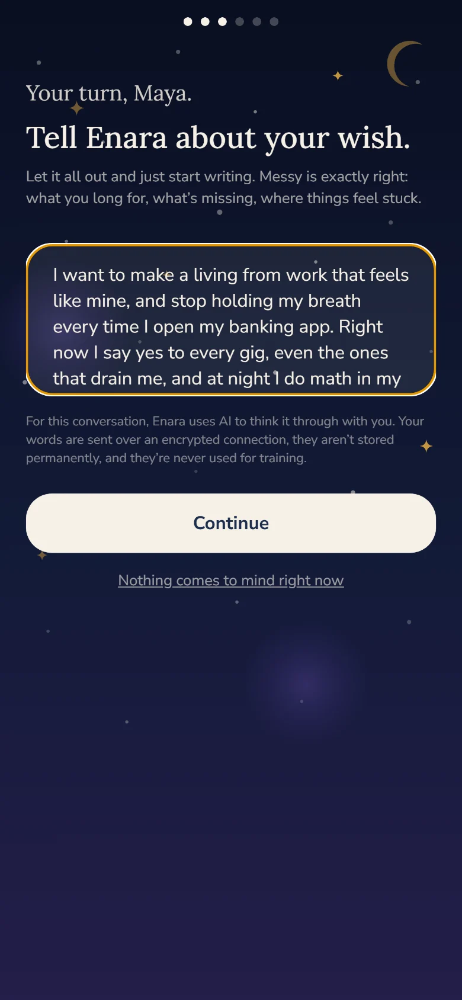
What Maya tells her
“I want to make a living from work that feels like mine, and stop holding my breath every time I open my banking app.”
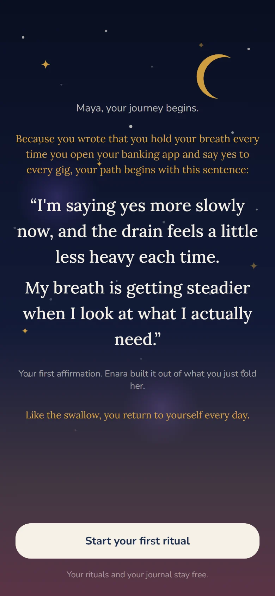
What Enara makes of it
A short getting-to-know-you conversation, and out of that comes her first affirmation. Not pulled from a list. From what Maya just said.
A month with Maya, a sample account
This is how Enara works with you.
A few minutes a day is all it takes. Here is Maya’s first month, screen by screen, straight from her account.
Day 1
Two anchors and one small task.
In the morning Maya sets the day, in the evening she closes it. In between, there is one task from the course, and Enara ties it to Maya’s own wish.
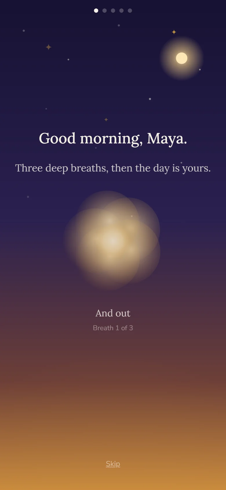
Morning
Three minutes that set the day.
One intention, three things she is grateful for, and her affirmation for today, worded so she can actually believe it.
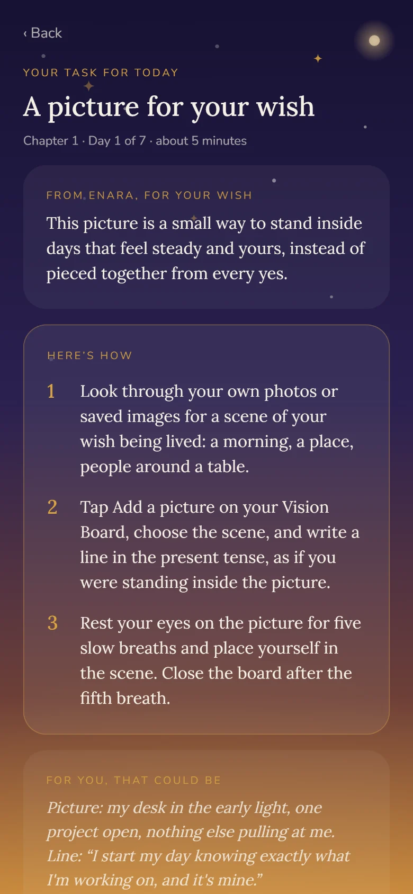
During the day
One task, made personal for Maya.
The course has 85 small tasks, one per day. With Plus, Enara ties the task to her wish:
“This picture is a small way to stand inside days that feel steady and yours, instead of pieced together from every yes.”
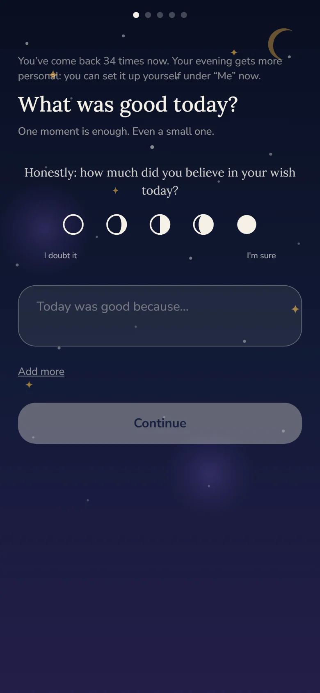
Evening
The evening doesn’t grade. It closes.
What was good, what she lets go of. Then the day is done, and a star appears in her sky.
Week 1
Enara learns how Maya talks.
After a few days Enara knows what Maya has written. What Maya writes shows up again in conversations, and the course walks her through what she practices in the rituals, chapter by chapter.
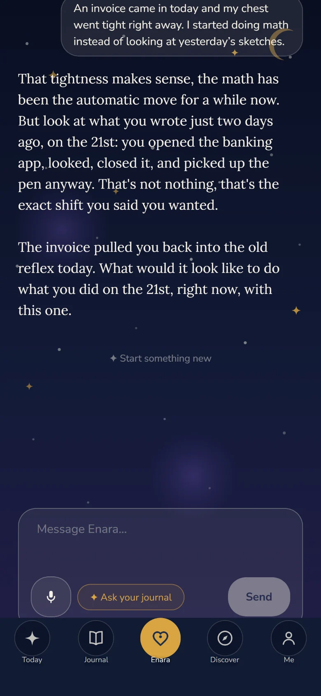
The conversation
Her answers remember.Plus
Maya writes about an invoice. Enara doesn’t name a number, and she doesn’t offer a trick. She points to a day in Maya’s journal that went differently, and asks one question.
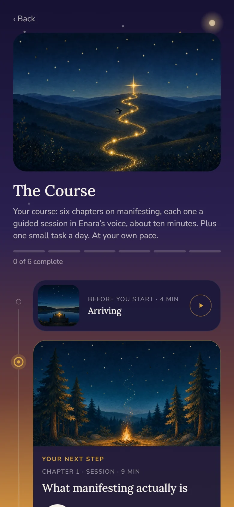
The course
Six chapters, in her ear.
Each chapter is a guided session of about ten minutes in Enara’s voice, one week per chapter, one task per day. The first two chapters are free.
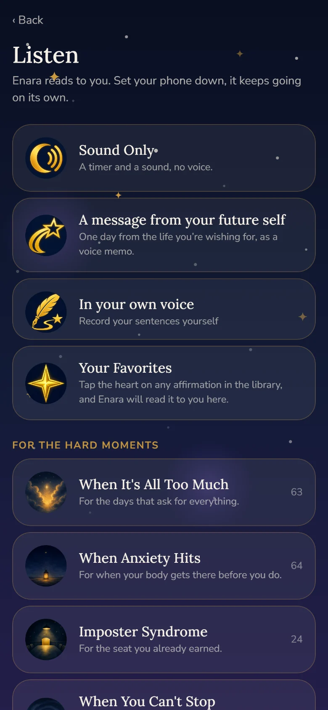
In between
Enara reads to her.
13 playlists in her voice, from falling asleep to the long road, plus eight sounds. Put the phone down, it keeps playing, even on the lock screen.
Month 1
At the end of the month, something comes back.
Every day with a ritual becomes a star. The stars form a picture, and at the end of the month Enara hands it back to Maya, together with a line from her own words.
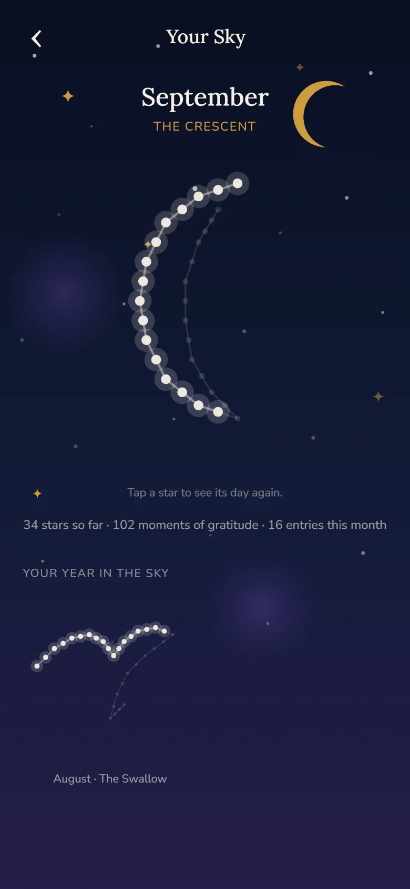
Her sky
Every day with a ritual adds a star.
Maya’s September, 16 stars, and her August below it. Every star leads back to its day. Nothing expires, nothing nags.
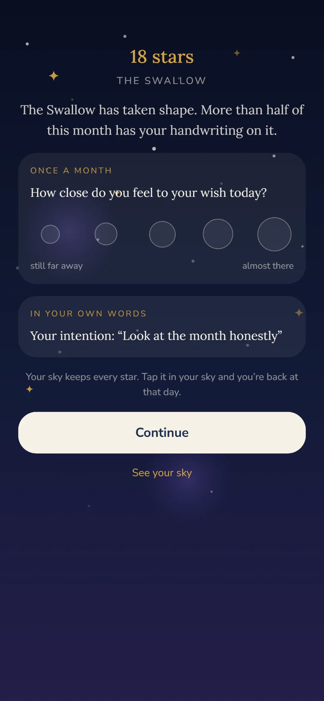
The monthly review
Not a trophy. Proof.
18 stars in August, her intention from the last day, and once a month the question of how close her wish feels right now. With Plus, Enara adds a letter about the month.
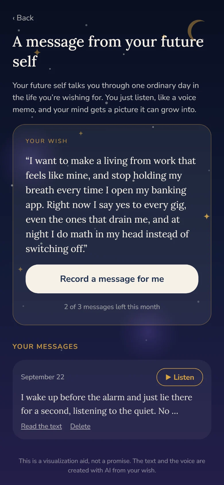
Her future self
One day from the life she wants.Plus
Her future self walks through an ordinary day, as a voice message in Enara’s voice. A way to picture it, not a promise. You can listen to it below.
Your first star can appear tonight. Seven free days, no card needed.
Listen
Enara’s voice, right here.
Everything Enara reads to you is voiced in her voice, an AI voice that belongs to her: 1,560 affirmations, 8 guided sessions, 13 playlists. Here are two of them, no app needed.
From the course: Arriving
The first minute of the session, the part that can come before any exercise. Free in the app.
“Sit up tall, awake and at ease. Let your hands rest in your lap or on your legs.”
The whole session runs about three and a half minutes, each of the six chapters about ten.
Maya’s message from her future selfPlus
Made from her wish, spoken in Enara’s voice. About a minute.
“I wake up before the alarm and just lie there for a second, listening to the quiet. No tightness in my chest yet, that’s new.”
Text and voice are generated with AI from your own wish. A way to picture it, not a promise. Three new messages a month, and the ones you save stay in your account.
Other wishes
Maya wants calm around money. You might want something else.
Six areas of life to choose from during setup, one main wish and a second one. The method stays the same. The words in it are yours.
“I want a relationship where I don’t have to shrink to be loved.”
- Your affirmation
- Enara builds it from your words, at a strength you can actually believe. Bridge, Growth, or Full.
- The task
- The same small tasks from the course, with Plus, tied to your wish: about you, not about somebody else.
- The conversation
- Enara asks about your day and your entries. She won’t promise you a person, and she won’t talk you out of one.
“I want to go to bed without replaying everything I said today.”
- Your affirmation
- Built from your words, in your morning ritual and when you close the day.
- The evening ritual
- What was good, what you let go of. Then the playlist for falling asleep in Enara’s voice, and it keeps playing on the lock screen.
- The conversation
- Enara listens, remembers the week and asks the one question that moves things. In a crisis she points you to people who can help right now.
“I want to still have energy in the evening for the things I love.”
- Your affirmation
- From your words, never a diagnosis and never a promise of healing. Enara is an AI, and she makes no secret of it.
- The task
- Small steps of one to ten minutes, with Plus, tied to your everyday life.
- The sky
- Every day you show up becomes a star. Even three stars are three real days.
What is included
A lot stays free. Plus makes Enara personal.
The numbers are counted in the code, as of September 2026.
Free forever
No card needed, and it follows you to any device.
- Morning ritual, midday check in, evening ritual with optional deeper questions, plus a question each week
- Journal with calendar, day pages, search and free writing
- Your sky with 12 constellations, a year view and the monthly review
- Your constellation, the one that grows with you
- The whole library: 1,560 affirmations in three strengths, favorites, share one as a card
- Listen: all 13 playlists, 8 sounds, Sound Only with a timer
- Course: the Arriving session, chapters 1 and 2, all 85 tasks
- Vision Board with two pictures, five affirmations in your own voice
- Reminders, app lock, English and German
Enara Plus
Everything that only works once Enara knows you. Seven days included.
- Conversations with Enara, with memory from your journal, and Ask your journal
- The personal task: Enara ties every task to your wish
- Messages from your future self, three a month
- Every guided session, chapters 3 to 6 and the evening session
- Her greetings, morning and evening, in her own words, plus nudges through the day
- The letter about your month and Enara’s note after a ritual
- Talk instead of typing: Enara turns it into a clean entry
- Moon ritual at new moon and full moon, all writing templates, Your Wish in your own lines
- Vision Board and your own voice without limits
Honest
What Enara never promises.
A journal only works if you can be honest in it. The same goes for us.
- No outcome. Enara never says where your path leads. She helps you show up, a few minutes a day. The path is yours to walk.
- No amount, no date, no higher power that delivers for you. If your wish is about money, Enara talks about calm and order in your everyday life, never about numbers.
- No therapy. Enara is an AI and says so openly. In a crisis she points you to the 988 Suicide and Crisis Lifeline in the US, and to findahelpline.com anywhere else.
- No invented voices. Maya is a sample account. There are no testimonials on this page, because we won’t make them up.
Your account lives in Frankfurt
Your entries are stored in your account on servers in Frankfurt, Germany, and sent over an encrypted connection. That is how they follow you to a new phone.
AI only if you say yes
Before you agree, not a word goes to an AI. You can withdraw your consent at any time, and Enara stays fully usable as a journal.
No ads, no tracking
Enara shows you nothing but Enara. No ad networks, no marketing analytics, not on this page either.
Delete whenever you want
You can delete your account and everything in it yourself, right in the app. What you wrote stays yours, with or without a subscription, always.
Pricing
Plain and simple.
Every new account starts with seven free days and full access, no card needed. Do a ritual on five of those days and you get three more. After that you decide. A subscription never starts automatically.
Enara
Your daily ritual, free for good.
$0 forever
- Both rituals and the midday check in
- Journal, sky, constellation, monthly review
- The whole library and everything to listen to
- Course through chapter 2, every task of the day
Enara Plus
With Enara as your companion.
$12.99 a month
or $59.99 a year
- Conversations with memory from your journal
- The personal task and messages from your future self
- Every guided session of the course
- Greetings, nudges and the letter about your month
- Talk instead of typing, moon ritual, all templates
- Vision Board and your own voice without limits
You will see the price in the App Store or on Google Play before any purchase. A subscription renews automatically until you cancel, which you can do anytime in your app store settings. Your entries stay yours either way.
You start on the free version. Plus is yours only if you want it.
Questions
Answered briefly.
What does Enara cost?
The rituals, the journal, your sky, the whole library and everything to listen to are free forever. Enara Plus is $12.99 a month, or $59.99 a year billed once, which works out to about $5 a month. That includes conversations with memory, the personal task, messages from your future self, every guided session, greetings and nudges, the letter about your month, talk instead of typing, the moon ritual and all writing templates. Every new account starts with seven free days and full access, no card needed.
Does a subscription start automatically after the free days?
No, never. When the free days end, Enara switches back to the free version on her own. A subscription only exists if you start one yourself in the App Store or on Google Play.
Is Maya real?
No. Maya is a sample account we set up for this page, with a wish in her words and journal entries we wrote. Everything Enara says back to her was generated inside the app. Enara writes something new every time. The screenshots show one real session. She is not a customer, and nothing here is a testimonial from her.
What happens to my entries?
Your entries are stored in your account on servers in Frankfurt, Germany, and sent over an encrypted connection, so they follow you to a new phone. Enara shows no ads and sells no data. You can delete your account and everything in it yourself, right in the app. The details are in the privacy policy.
Does an AI read my journal without asking?
Not unless you say yes. After that, the app sends along a package of context from your account: your profile and your wish, your ritual answers from the last few days, Enara’s own weekly summaries and, as long as you leave the setting “Let Enara read what I write” on, the pages you write on your own. More on that in the privacy policy. Withdraw that consent and Enara stays fully usable as a journal.
Does Enara replace therapy?
No. Enara is a tool for reflection and well-being, not a medical or therapeutic service. In a crisis, Enara points you to the 988 Suicide and Crisis Lifeline in the US, and to findahelpline.com anywhere else.
Is Enara available for Android?
Yes. Enara is on the App Store for iPhone and on Google Play for Android, in English and German. Your account moves with you from one device to the other.
Worth reading
What holds up, and what does not.
Every claim comes with an honest note on what the research shows and where it stays quiet.
Manifestation techniques that actually work
Twelve methods side by side, from scripting to moon work. How each one works and where to start.
What to write in a manifestation journal
Six building blocks for the blank page, each with its honest evidence note.
Scripting: how to start and what to write
Five rules, six opening lines to copy, and the paragraph almost every guide leaves out.
Self-love affirmations
30 lines in three strengths, so none of them lands like a lie.
How manifestation actually works
The five steps that do the work, and what to take from Goddard, Byrne, Hicks and Dispenza.
Enara means swallow.
She comes back every year without anyone calling her. Enara is available for iPhone and Android. Questions are welcome at support@getenara.app
On a computer? Point your phone’s camera at the code and you land in the right store.